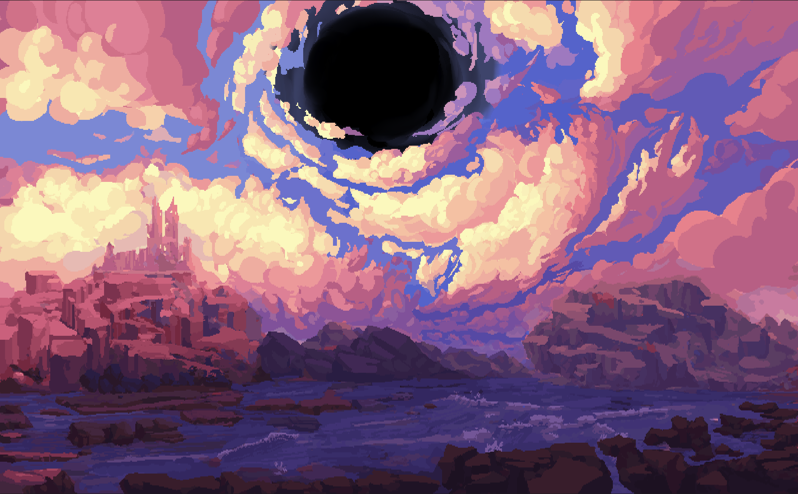

Paisaje surrealista y mágico
Esta imagen pixel art muestra un paisaje surrealista con un cielo dramático lleno de nubes en tonos vibrantes de rosa, naranja y púrpura, que se arremolinan hacia un inquietante agujero negro en el centro.
Bajo el cielo estrellado
Esta imagen presenta un vibrante cielo nocturno lleno de colores cálidos y fríos que se mezclan en perfecta armonía. Entre nubes resplandecientes y estrellas dispersas, destacan tres cuerpos celestes misteriosos en el horizonte.
Acogedor rincón mágico
habitación cálida y llena de detalles con temática medieval o de fantasía. En el centro, destaca una cama con ropa de cama roja, mientras que un escritorio de madera está repleto de botellas, plantas y papeles.
Rincón sereno en la costa
tranquilo escenario costero, con formaciones rocosas y olas chocando suavemente contra la orilla. Los acantilados oscuros a los lados enmarcan la vista, mientras que, en la distancia, se destaca una gran roca dentada que se eleva desde el mar.